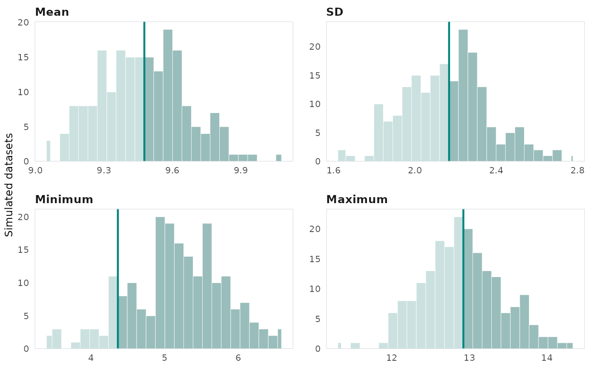
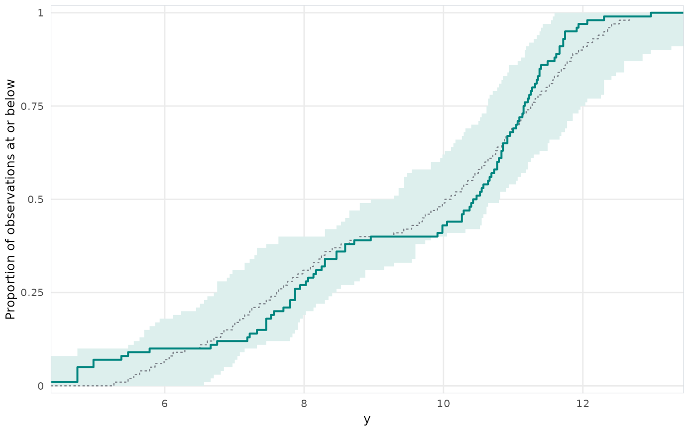
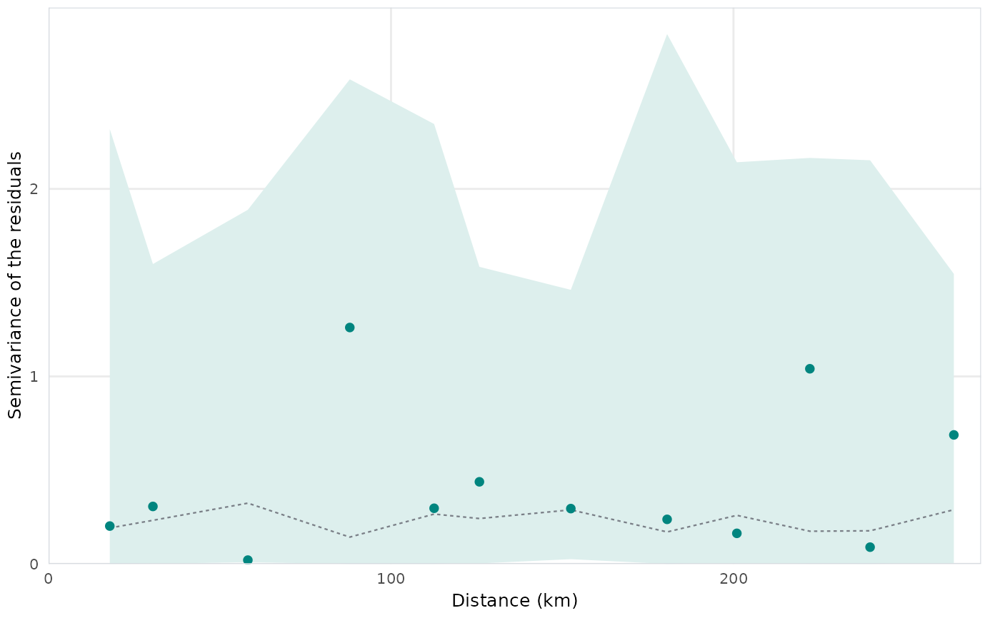

Plot the assessment of models against simulated data
Source:R/predictive_check_plots.R
plot_predictive_check.RdDraws the observed data against datasets simulated from each model, from the
result of assess_fit(), as plot() of the result does.
Usage
plot_predictive_check(x, type = NULL, model = NULL, colour = "#00857F", ...)
# S3 method for class 'RiskMap_predictive_check'
plot(x, ...)Arguments
- x
The result of
assess_fit().- type
What to draw, each
"statistic"that is a number, the"distribution"of the prevalence, the rate or the response, or the"variogram"of the residuals from the covariates. By default, the first of these thatxhas, which is the variogram when it is the only one instatisticsofassess_fit().- model
Names of the models to include, all of them by default.
- colour
The colour of what is observed. The histograms and the bands have paler versions of it.
- ...
For
plot(), the arguments ofplot_predictive_check(). Forplot_predictive_check(), not used, and an error if given, so that a misspelt argument is not ignored. Add ggplot2 components to the plot with+.
Statistics
The histograms are those of the simulated datasets, with the models in rows, and the vertical line is the observed value. The darker bars are the simulated values at or above the observed one, whose proportion summary() gives. The observed value is unusual for the model when it is in a tail of the histogram, beyond nearly all of the bars. It doesn't have to be in the middle. A bar at the observed value is darker, so the whole histogram is when the observed value is the smallest possible one, such as a proportion of zeros of 0, which need not be unusual.
Distribution and variogram
The band is the 95% joint envelope of the simulated curves and the dashed
line their median at each value. The observed distribution function is the
thick line, and the observed semivariances are the points. Where the
observed curve is outside the band, it is orange. The band is joint, so that
the whole curve of a dataset from the model is inside it with a probability
of 95%, however many values or distance classes there are. Its edge depends
on the simulations, so a single point near the edge says little, and the
first distance classes often have few pairs. The points of the variogram are
not joined by lines, as in plot_variogram(). Each model has its own
points, because the residuals are those from its covariates.
Examples
data(italy_sim)
example_data <- italy_sim[1:100, ]
fit <- glgpm(y ~ log(pop_dens) + gp(), data = example_data,
family = "gaussian", messages = FALSE)
result <- assess_fit(fit, nsim = 199, seed = 1)
plot_predictive_check(result)

plot_predictive_check(result, type = "distribution")

plot_predictive_check(result, type = "variogram")

# Only the variogram, which is then what is drawn
result <- assess_fit(fit, "variogram", nsim = 199, seed = 1)
plot(result)